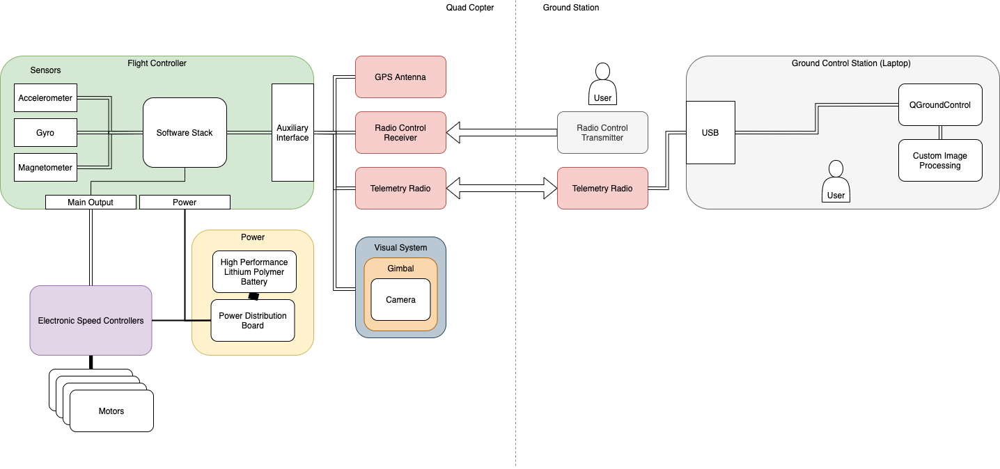

Conventional approaches to building inspection are laborious, costly, and dangerous. As it stands, an
inspector has to personally travel around any building he would like to inspect; furthermore, in the case of
a particularly tall building, he would have to be elevated to thoroughly survey the external surfaces of the
structure. This process is slow, expensive, and potentially dangerous.
On the contrary, the use of an automated drone for such a task would be faster, cheaper, safer, and overall
more convenient for everyone involved. The drone will be able to fly itself around a designated building and
accurately identify any flaws that are externally visible. This will include features such as cracks in
walls, clogged gutters, broken windows, and the like.

Project Development
User Interface
As one of the core requirements of the project, the drone must be operable using a user
interface of some kind
This will allow the operator to navigate the drone, configure inspection or navigation
settings, or access data from the drone’s flight.
This should be written in a more familiar programming language such as Python or
MATLAB
The drone should be able to communicate in the same capacity as what has been stated above via
the use of an app on an Android phone.
This should allow for interoperability as many individuals have access to or are
familiar with Android phones
The drone furthermore may be operable using a web server, allowing users to configure the drone
or access data without a physical connection to the drone
Image Processing
The drone uses image processing in order to isolate and identify relevant information for the
operator, which will take place in three steps
The first operation that the device must be able to perform is to identify what portions of the
video data taken may be relevant to the inspection of the structure
This should greatly reduce the amount of video data that needs to be processed and
analyzed
Secondly, the device must have a system of video stabilization and a means of positionally
identifying Regions of Interest (ROIs) to further inspect and record
This will require a degree of machine learning as it will be up to the drone’s
discretion to choose what areas are worthy of being investigated more
The system must be able to extract high-quality images from the processed video feed for direct
analysis by the operator
This will also require machine learning processes, as the computer must identify the
most helpful or relevant pieces of information to provide to the operator, without
missing any
Drone Navigation and Path Planning
The drone must be able to fly and navigate around the building which it is inspecting, which
will be achieved in three steps
The drone must be operable using a remote controller, either via a radio controller or
a WIFI-connected computer
The drone must be capable of semi-autonomous flight, allowing the user to designate
the drone’s flight path and ROIs, which would then be inspected by the drone without direct
control
The drone should be capable of fully autonomous, self-planning flight
With this mode, the drone will be given a set of parameters, and it will then generate
its own flight path and ROIs through observation
The drone should also have its own proximity obstacle detection and safe takeoff/landing
protocols